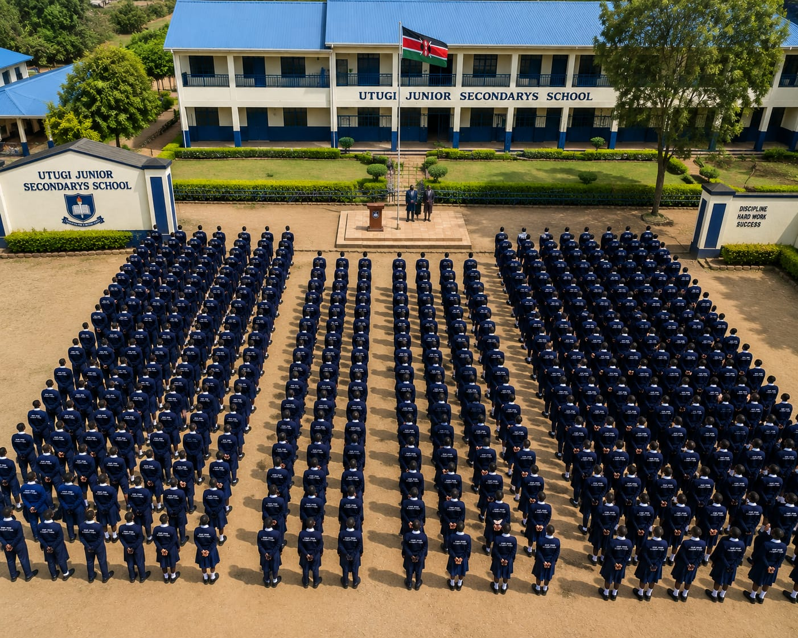
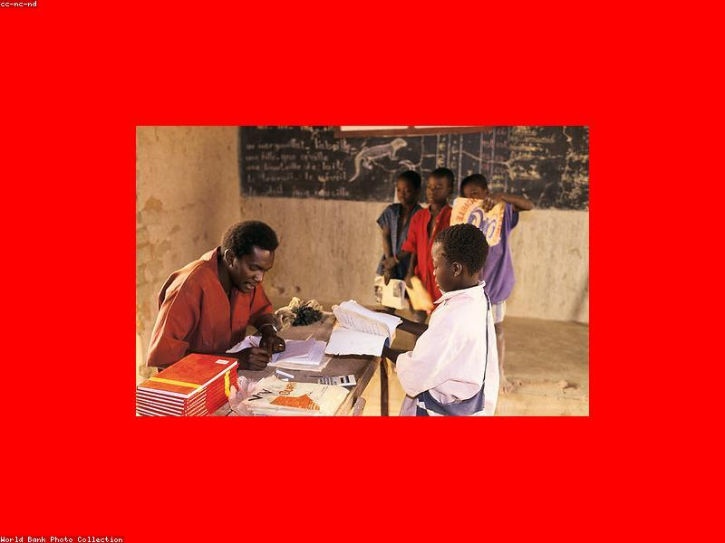
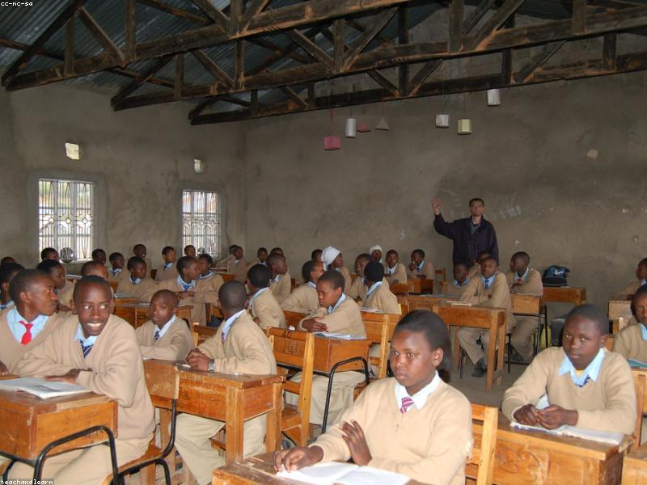

Our CBC-aligned curriculum prepares learners with the competencies and skills needed for the 21st century.
The Competency-Based Curriculum focuses on developing learners' skills rather than just knowledge acquisition.
The Competency-Based Curriculum (CBC) was introduced by the Kenya Institute of Curriculum Development (KICD) to shift education from knowledge-based to competency-based learning. Junior Secondary (Grade 7-9) bridges primary education and senior secondary school.
At Utugi JSS, learners are assessed through formative and summative assessments focusing on seven core competencies: Communication and Collaboration, Critical Thinking and Problem Solving, Creativity and Imagination, Citizenship, Digital Literacy, Learning to Learn, and Self-Efficacy.
Explore what each grade level offers at Utugi Junior Secondary School.
Grade 7 marks the transition from upper primary to junior secondary. Learners are introduced to new subject areas and a deeper level of competency-based learning.

Grade 8 learners deepen their knowledge and begin exploring career pathways and interests through elective subjects and projects.

The final year of junior secondary prepares learners for Senior Secondary School pathways: STEM, Arts & Sports, or Social Sciences.

A comprehensive curriculum covering all CBC learning areas.
We use learner-centred methods that bring education to life.
Practical experiments, projects, and real-world applications across all subjects.
Computer-aided learning, digital literacy skills, and ICT across the curriculum.
Group work, peer tutoring, and community-based projects that build teamwork.
Formative assessments, portfolios, and competency-based evaluation for holistic progress.
Beyond the classroom, our learners develop their talents and passions.
Football, netball, volleyball, athletics, basketball, and table tennis programmes.
Choir, instrumental music, drama, and creative performance arts.
Debate club, Science club, Environmental club, ICT club, and more.
January 6 – April 4, 2026
13 weeks of learning. Mid-term break: February 17–21.
April 28 – August 1, 2026
14 weeks of learning. Mid-term break: June 2–6.
August 25 – November 7, 2026
11 weeks of learning. National assessments in October.